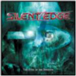

| Artist: | Silent Edge |
| Title: | The Eyes Of The Shadow |
| Label: | DVS DVS009 |
| Length(s): | 64 minutes |
| Year(s) of release: | 2003 |
| Month of review: | [09/2003] |
| 1) | Through Different Eyes | 6.02 |
| 2) | Savage Symphony | 5.32 |
| 3) | Wasted Lands | 8.50 |
| 4) | The Curse I Hold Within | 5.24 |
| 5) | Crusades | 2.28 |
| 6) | For Ancient Times | 8.40 |
| 7) | Lost Conscience | 6.40 |
| 8) | Under A Shaded Moon | 5.48 |
| 9) | Rebellion | 8.59 |
| 10) | Rebellion (The Awakening) | 5.30 |
Wasted Lands has a pretty grave feel, with slower, somewhat dogmatic rhythm, reminding of some Rainbow tracks. The keyboard solo in the middle has a more open feel, but with its ending the graveness returns, a graveness giving a more serious feel.
The Curse I Hold Within is a ballad opened with acoustic guitar and with a serious, near tormented feel about it. The lack of other instruments than acoustic guitars and voice conveys intimacy and sincerity. Crusades couldn't contrast more, being an instrumental focussing on synths, heavy guitar and choir.
For Ancient Times returns to the powermetal feel, or does so initially. As it progresses we move into a somewhat tranquil interlude, leading into an instrumental sections that's led by synths on the flutey side of life, the way Eloy used them in the seventies, combined with heavy guitar accompaniement. This makes for a rather potent brew, not in the least because of the subtle enough melodic bends in the track.
Lost Conscience starts on heavy synths. This is one of the more grave tracks, not to pushy and due to that lacking the power to convince, dragging on a little too much, although the instrumental section does hold up.
Under A Shaded Moon is another one of those more up tempo tracks. Is does not seem to add a great deal to what's gone before. Rebellion is powermetally and has a lengthy Malmsteen section, which is ended by some vocal parts that are pretty much the only interesting bit of this track. Awakening is a good name for the closer, since is wakes us from the Malmsteen section with its piano vocal nature. As sort of a ghost track we are presented with a guitaristic afterbirth that stands up pretty well.